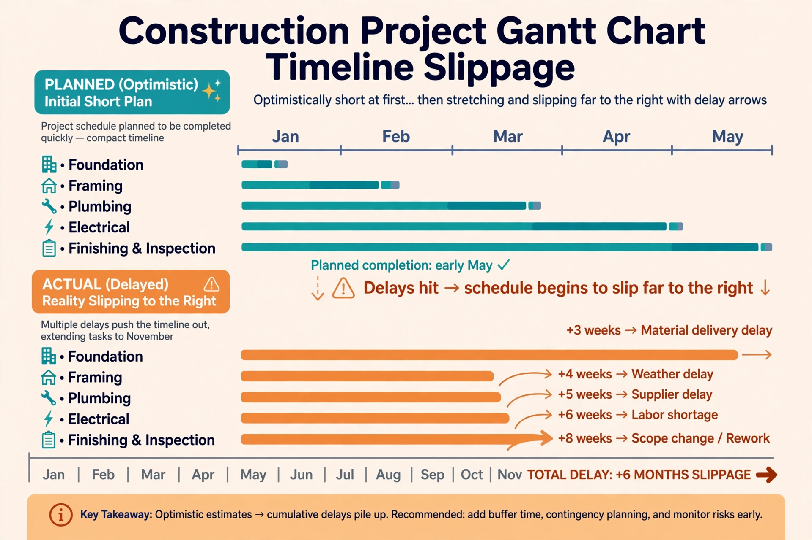

| Field | Cognitive psychology, behavioural economics |
| Proposed by | Daniel Kahneman and Amos Tversky (1977) |
| Definition | Systematic underestimation of time, cost and risk of future actions |
| Antidote | Reference class forecasting; the "outside view" |

The planning fallacy is a phenomenon in which predictions about how much time will be needed to complete a future task display an optimism bias and underestimate the time needed. Proposed by Daniel Kahneman and Amos Tversky in 1977 (and named in their 1979 work), it describes the tendency to plan from an "inside view" — focusing on the components of the specific project and imagining success — while ignoring the distributional record of similar past projects.
In a classic 1994 study, psychology students estimated they would finish their honours theses in about 34 days on average; the actual average was about 56 days, and only around 30 per cent finished by their predicted date. The pattern recurs at every scale: the Sydney Opera House was forecast to cost A$7 million and open in 1963 but cost A$102 million and opened in 1973; large transport projects studied by Bent Flyvbjerg show systematic cost overruns across decades and continents.
Proposed mechanisms include focalism (overweighting the target task), wishful thinking and self-serving attribution, and neglecting base rates. Notably, people often make accurate predictions for others' projects while remaining optimistic about their own, suggesting the bias is partly motivational and partly cognitive.
Kahneman's remedy is the outside view: identify a reference class of similar projects, obtain their actual outcome statistics, and anchor the forecast on that distribution — formalised as reference class forecasting, now recommended in UK Treasury guidance for major projects. Unpacking a task into subcomponents, pre-mortems, and considering one's own past completion times can also reduce the bias.